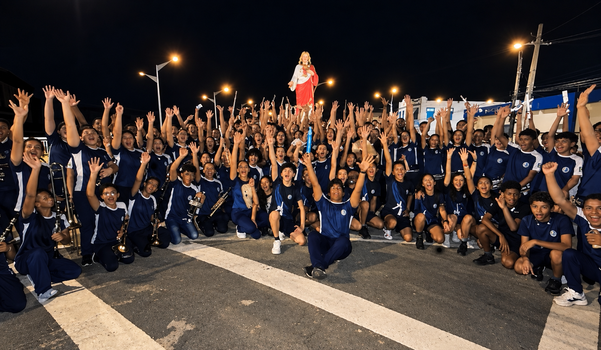
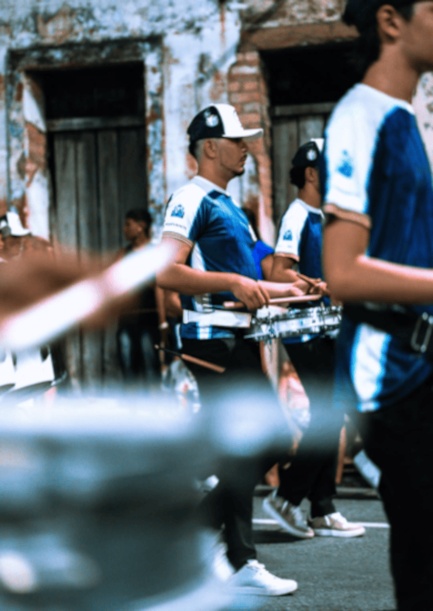

BANDA MUSICAL SANTA MARIA GORETTI


uma nova camisa. Um novo projeto. Um novo desafio. A Banda Musical SMG entra em uma nova fase,com a mesma paixão de sempre. Que comece essa história.
A trajetória da Banda Musical Santa Maria Goretti (SAMAGO) está ligada à história da Escola Santa Maria Goretti, em Oriximiná, no Pará. O que começou como uma iniciativa musical escolar cresceu e se tornou uma expressão de identidade, cultura e orgulho para a comunidade goretiana.